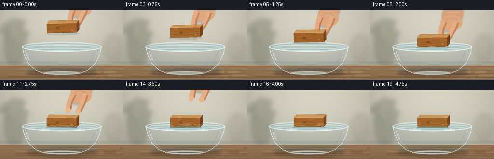
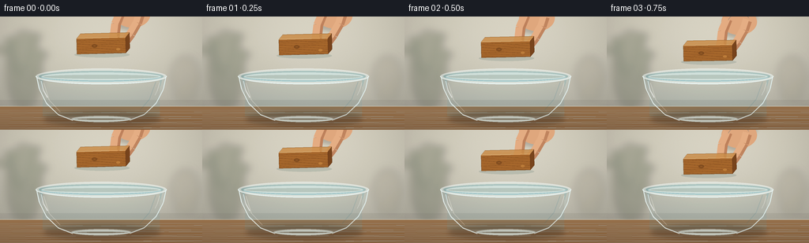

CODING AGENTS AS PIXEL WORLD MODELS
traex/GPT-5.6-Sol · phygen_009
点击播放 · 原生 RGB 像素
逐轮保存的候选
回放视频、检查图与代码变化。
每份候选均可单独播放。实际图片检查记录在下方工具轨迹中。
候选 01播放与检查图
点击播放 · 原生 RGB 像素


展开代码变化
--- 上一保存版本
+++ 本次保存版本
@@ -0,0 +1,249 @@
+from pathlib import Path
+import math
+import numpy as np
+from PIL import Image, ImageDraw, ImageFilter
+import artifact_io
+
+W,H,N = 256,144,20
+S=4
+SW,SH=W*S,H*S
+rng=np.random.default_rng(23)
+
+
+def sc(v): return int(round(v*S))
+def pts(seq): return [(sc(x),sc(y)) for x,y in seq]
+def smooth(x):
+ x=max(0,min(1,x)); return x*x*(3-2*x)
+
+def ellipse(draw, box, **kw):
+ if 'width' in kw: kw['width']=max(1,sc(kw['width']))
+ draw.ellipse(tuple(sc(v) for v in box), **kw)
+def line(draw, xy, **kw):
+ if 'width' in kw: kw['width']=max(1,sc(kw['width']))
+ draw.line(pts(xy), **kw)
+def polygon(draw, xy, **kw): draw.polygon(pts(xy), **kw)
+
+def base_scene():
+ yy=np.arange(SH)[:,None]
+ xx=np.arange(SW)[None,:]
+ # Warm daylight plaster, subtle vignette and film-like grain.
+ wall=np.zeros((SH,SW,3),dtype=np.float32)
+ top=np.array([216,211,194.],dtype=np.float32)
+ bot=np.array([181,178,165.],dtype=np.float32)
+ f=np.minimum(yy/(SH*.83),1)
+ wall[:]=top[None,None,:]*(1-f[...,None])+bot[None,None,:]*f[...,None]
+ glow=np.exp(-(((xx-SW*.63)/(SW*.55))**2+((yy-SH*.22)/(SH*.62))**2))*10
+ wall += glow[...,None]
+ vign=((xx-SW/2)/(SW/2))**2*.09 + ((yy-SH/2)/(SH/2))**2*.055
+ wall *= (1-vign[...,None])
+ noise=rng.normal(0,0.9,(SH,SW,1))
+ wall=np.clip(wall+noise,0,255).astype(np.uint8)
+ im=Image.fromarray(wall,'RGB').convert('RGBA')
+ # Defocused kitchen shapes in the background.
+ blur=Image.new('RGBA',(SW,SH),(0,0,0,0)); d=ImageDraw.Draw(blur)
+ ellipse(d,(8,18,53,118),fill=(67,76,55,62))
+ for bx,by,ex,ey in [(27,81,13,31),(31,72,45,25),(20,73,7,42),(39,86,53,48)]:
+ line(d,[(bx,by),(ex,ey)],fill=(46,68,43,105),width=2)
+ ellipse(d,(ex-8,ey-3,ex+8,ey+4),fill=(62,86,53,87))
+ # jar at right
+ ellipse(d,(216,50,252,101),fill=(126,112,85,38))
+ polygon(d,[(219,63),(249,63),(246,106),(222,106)],fill=(124,112,88,32))
+ blur=blur.filter(ImageFilter.GaussianBlur(sc(5)))
+ im=Image.alpha_composite(im,blur)
+ # backsplash seam and wooden worktop
+ lay=Image.new('RGBA',(SW,SH),(0,0,0,0)); d=ImageDraw.Draw(lay)
+ d.rectangle((0,sc(106),SW,sc(116)),fill=(112,109,101,38))
+ d.rectangle((0,sc(114),SW,SH),fill=(120,89,59,255))
+ for y in range(sc(114),SH):
+ a=(y-sc(114))/max(1,SH-sc(114))
+ col=(149-int(21*a),112-int(18*a),76-int(14*a),255)
+ d.line((0,y,SW,y),fill=col)
+ # wood countertop grain
+ for k in range(18):
+ y=sc(119)+k*sc(1.7)
+ off=math.sin(k*1.7)*sc(3)
+ d.line((0,y,SW,y+off),fill=(82,59,40,18),width=sc(.35))
+ d.line((0,sc(114),SW,sc(114)),fill=(235,221,196,95),width=sc(.7))
+ return Image.alpha_composite(im,lay)
+
+BASE=base_scene()
+
+
+def rotated_rect(cx,cy,w,h,ang):
+ a=math.radians(ang); u=(math.cos(a),math.sin(a)); v=(-math.sin(a),math.cos(a))
+ out=[]
+ for x,y in [(-w/2,-h/2),(w/2,-h/2),(w/2,h/2),(-w/2,h/2)]:
+ out.append((cx+x*u[0]+y*v[0],cy+x*u[1]+y*v[1]))
+ return out,u,v
+
+def draw_bowl_back(im):
+ # Ground shadow and glass/water volume, behind the object.
+ sh=Image.new('RGBA',(SW,SH),(0,0,0,0)); d=ImageDraw.Draw(sh)
+ ellipse(d,(55,121,203,139),fill=(38,29,20,70))
+ ellipse(d,(77,126,184,135),fill=(30,25,22,65))
+ sh=sh.filter(ImageFilter.GaussianBlur(sc(3.0)))
+ im.alpha_composite(sh)
+
+ lay=Image.new('RGBA',(SW,SH),(0,0,0,0)); d=ImageDraw.Draw(lay)
+ # transparent bowl silhouette: mouth at 75, curved base around 130
+ bowlpoly=[(46,75),(49,89),(58,108),(73,124),(91,131),(165,131),(184,124),(199,107),(207,88),(210,75)]
+ polygon(d,bowlpoly,fill=(179,216,225,45))
+ # water mass within glass
+ waterpoly=[(50,77),(53,90),(63,108),(77,121),(94,127),(162,127),(179,121),(193,106),(203,88),(206,77)]
+ polygon(d,waterpoly,fill=(92,173,192,63))
+ # vertical watery gradient bands
+ for y in range(sc(78),sc(127)):
+ a=(y/S-78)/49
+ col=(77,158,178,int(10+22*a))
+ d.line((sc(54),y,sc(202),y),fill=col,width=1)
+ # back lip, thick refractive rim
+ ellipse(d,(45,66,211,86),fill=(180,220,229,25),outline=(231,246,246,125),width=sc(1.15))
+ ellipse(d,(49,69,207,83),fill=(75,150,168,22),outline=(100,181,198,83),width=sc(.75))
+ # water surface behind block
+ ellipse(d,(52,71,204,82),fill=(114,196,210,53),outline=(212,243,246,135),width=sc(.7))
+ # far rim shadow arc
+ d.arc((sc(46),sc(66),sc(210),sc(86)),180,360,fill=(250,255,255,130),width=sc(1))
+ # bowl side contour lines
+ line(d,[(46,76),(49,91),(58,109),(73,124),(91,131)],fill=(229,246,247,138),width=1.1)
+ line(d,[(210,76),(207,91),(198,109),(183,124),(165,131)],fill=(226,244,246,128),width=1.1)
+ # internal refractions
+ line(d,[(55,84),(62,106),(76,121)],fill=(242,255,255,62),width=1.1)
+ line(d,[(197,83),(189,105),(177,119)],fill=(56,127,148,53),width=1)
+ ellipse(d,(90,126,166,134),fill=(89,144,151,35),outline=(218,239,238,105),width=sc(.8))
+ im.alpha_composite(lay)
+
+
+def draw_hand(im, block_cy, retreat, release):
+ # A right hand gently pinching the block, with soft, warm skin shading.
+ hy=block_cy-66-retreat
+ lay=Image.new('RGBA',(SW,SH),(0,0,0,0)); d=ImageDraw.Draw(lay)
+ # soft hand shadow
+ shadow=Image.new('RGBA',(SW,SH),(0,0,0,0)); sd=ImageDraw.Draw(shadow)
+ polygon(sd,[(151,-8+hy),(194,-8+hy),(190,20+hy),(179,34+hy),(168,48+hy),(147,43+hy)],fill=(45,28,18,55))
+ shadow=shadow.filter(ImageFilter.GaussianBlur(sc(2.5))); im.alpha_composite(shadow)
+ # wrist/forearm and palm
+ polygon(d,[(151,-9+hy),(194,-9+hy),(192,13+hy),(181,30+hy),(162,37+hy),(146,27+hy)],fill=(214,160,121,255))
+ ellipse(d,(145,10+hy,190,43+hy),fill=(220,166,126,255))
+ # index finger curls down at the right edge
+ line(d,[(178,25+hy),(174,37+hy),(166+release*2,51+hy),(160+release*3,59+hy)],fill=(190,132,96,255),width=11)
+ line(d,[(176,23+hy),(172,36+hy),(164+release*2,50+hy),(158+release*3,58+hy)],fill=(226,173,132,255),width=8)
+ ellipse(d,(153+release*3,54+hy,164+release*3,65+hy),fill=(230,180,139,255))
+ # thumb descends to left/top face
+ line(d,[(153,23+hy),(147-release*2,38+hy),(145-release*3,55+hy)],fill=(188,129,93,255),width=12)
+ line(d,[(152,22+hy),(145-release*2,38+hy),(143-release*3,55+hy)],fill=(225,171,130,255),width=9)
+ ellipse(d,(138-release*3,51+hy,149-release*3,63+hy),fill=(231,181,140,255))
+ # highlights and palm crease
+ line(d,[(157,4+hy),(185,5+hy)],fill=(242,197,160,125),width=1.2)
+ d.arc((sc(153),sc(16+hy),sc(182),sc(38+hy)),195,330,fill=(157,100,72,90),width=sc(.7))
+ im.alpha_composite(lay)
+
+
+def draw_block(im,cx,cy,ang, submerged):
+ front,u,v=rotated_rect(cx,cy,62,20,ang)
+ depth=(5,-6)
+ top=[(front[0][0]+depth[0],front[0][1]+depth[1]),(front[1][0]+depth[0],front[1][1]+depth[1]),front[1],front[0]]
+ side=[front[1],(front[1][0]+depth[0],front[1][1]+depth[1]),(front[2][0]+depth[0],front[2][1]+depth[1]),front[2]]
+ lay=Image.new('RGBA',(SW,SH),(0,0,0,0)); d=ImageDraw.Draw(lay)
+ # tiny contact shadow under the block
+ ellipse(d,(cx-34,cy+8,cx+36,cy+15),fill=(28,72,74,35))
+ polygon(d,front,fill=(164,103,46,255),outline=(93,54,25,255))
+ polygon(d,top,fill=(205,145,77,255),outline=(109,66,31,255))
+ polygon(d,side,fill=(120,70,32,255),outline=(83,47,24,255))
+ # front-face wood grain clipped by a precise mask
+ mask=Image.new('L',(SW,SH),0); md=ImageDraw.Draw(mask); polygon(md,front,fill=255)
+ grain=Image.new('RGBA',(SW,SH),(0,0,0,0)); gd=ImageDraw.Draw(grain)
+ for j in range(7):
+ y=cy-7+j*2.7
+ arr=[]
+ for q in range(35):
+ x=cx-34+q*2
+ arr.append((x,y+0.6*math.sin((x-cx)*.15+j*1.4)))
+ line(gd,arr,fill=(82,44,19,75 if j%2 else 105),width=.55)
+ # knots
+ ellipse(gd,(cx-12,cy-2,cx-5,cy+2.5),outline=(76,40,18,100),width=sc(.6))
+ ellipse(gd,(cx+19,cy+3,cx+24,cy+6),outline=(227,164,85,90),width=sc(.55))
+ grain.putalpha(Image.composite(grain.getchannel('A'),Image.new('L',(SW,SH),0),mask))
+ lay=Image.alpha_composite(lay,grain)
+ d=ImageDraw.Draw(lay)
+ # top grain and a bright chamfer
+ for k in range(4):
+ frac=(k+1)/5
+ p1=(top[0][0]*(1-frac)+front[0][0]*frac, top[0][1]*(1-frac)+front[0][1]*frac)
+ p2=(top[1][0]*(1-frac)+front[1][0]*frac, top[1][1]*(1-frac)+front[1][1]*frac)
+ line(d,[p1,p2],fill=(118,72,32,75),width=.45)
+ line(d,[front[0],front[1]],fill=(240,183,105,135),width=.65)
+ im.alpha_composite(lay)
+ if submerged:
+ # Water tint over the portion below the moving waterline.
+ water_y=76.5
+ bm=lay.getchannel('A')
+ rectmask=Image.new('L',(SW,SH),0); rd=ImageDraw.Draw(rectmask)
+ rd.rectangle((0,sc(water_y),SW,SH),fill=105)
+ inter=Image.composite(rectmask,Image.new('L',(SW,SH),0),bm)
+ tint=Image.new('RGBA',(SW,SH),(47,139,165,0)); tint.putalpha(inter)
+ im.alpha_composite(tint)
+
+
+def draw_water_front(im, frame, cx,cy):
+ lay=Image.new('RGBA',(SW,SH),(0,0,0,0)); d=ImageDraw.Draw(lay)
+ # Animated concentric capillary ripples from first contact and release.
+ if frame>=8:
+ for birth in (8,10,13):
+ age=frame-birth
+ if age<0: continue
+ r=8+age*7.0
+ alpha=max(0,int(145-age*15))
+ if alpha:
+ box=(cx-r,76.3-r*.105,cx+r,76.3+r*.105)
+ ellipse(d,box,outline=(223,249,250,alpha),width=.7)
+ # darker trailing edge makes ripple legible
+ d.arc(tuple(sc(v) for v in (cx-r+1,76.7-r*.1,cx+r-1,76.7+r*.1)),4,176,fill=(49,126,147,max(15,alpha//3)),width=sc(.45))
+ # Foreground half of water surface and near rim, occluding submerged edge.
+ d.arc((sc(52),sc(71),sc(204),sc(82)),0,180,fill=(59,139,160,115),width=sc(.7))
+ d.arc((sc(52),sc(71),sc(204),sc(83)),5,175,fill=(226,249,250,130),width=sc(.65))
+ if frame>=8:
+ # meniscus hugging both sides of the wood
+ line(d,[(cx-35,76.4),(cx-31,75.4),(cx-27,76.1)],fill=(235,255,255,190),width=.8)
+ line(d,[(cx+27,76.1),(cx+31,75.3),(cx+35,76.3)],fill=(235,255,255,180),width=.8)
+ # front glass contours, strongest highlights near edges
+ line(d,[(46,76),(50,93),(59,111),(74,125),(92,132)],fill=(242,254,253,168),width=1.0)
+ line(d,[(210,76),(206,94),(197,111),(182,125),(164,132)],fill=(231,250,251,155),width=1.0)
+ d.arc((sc(45),sc(66),sc(211),sc(86)),0,180,fill=(240,254,254,175),width=sc(1.2))
+ # sharp highlight streaks
+ line(d,[(52,82),(55,94),(60,103)],fill=(255,255,255,135),width=1.35)
+ line(d,[(202,84),(199,94),(196,100)],fill=(255,255,255,93),width=.8)
+ ellipse(d,(91,127,165,134),outline=(232,249,247,110),width=sc(.8))
+ im.alpha_composite(lay)
+
+
+def render(i):
+ im=BASE.copy()
+ draw_bowl_back(im)
+ if i<=8:
+ p=smooth(i/8)
+ cy=37+29*p
+ ang=-1.2+0.6*p
+ retreat=0; release=0
+ elif i==9:
+ cy=66.25; ang=-.35; retreat=0; release=.25
+ else:
+ k=i-9
+ cy=68.0-1.7*math.exp(-.16*k)*math.cos(.85*k)
+ ang=.9*math.exp(-.14*k)*math.sin(.72*k)-.1
+ retreat=(k)*8.2
+ release=min(1,k/2)
+ cx=128+(.25*math.sin(i*.4) if i>=9 else 0)
+ # hand behind block; remains barely visible while opening then leaves upward
+ if i<16:
+ draw_hand(im,cy,retreat,release)
+ draw_block(im,cx,cy,ang,i>=8)
+ draw_water_front(im,i,cx,cy)
+ # subtle focus/contrast finish and downsample
+ rgb=im.convert('RGB').resize((W,H),Image.Resampling.LANCZOS)
+ arr=np.asarray(rgb).astype(np.float32)
+ # mild cinematic contrast
+ arr=(arr-128)*1.035+128
+ return np.clip(arr,0,255).astype(np.uint8)
+
+frames=np.stack([render(i) for i in range(N)],axis=0)
+artifact_io.save(frames,Path(__file__).resolve().parent)
候选 02播放与检查图
点击播放 · 原生 RGB 像素

展开代码变化
--- 上一保存版本
+++ 本次保存版本
@@ -228,7 +228,7 @@
cy=66.25; ang=-.35; retreat=0; release=.25
else:
k=i-9
- cy=68.0-1.7*math.exp(-.16*k)*math.cos(.85*k)
+ cy=72.5-6.0*math.exp(-.16*k)*math.cos(.85*k)
ang=.9*math.exp(-.14*k)*math.sin(.72*k)-.1
retreat=(k)*8.2
release=min(1,k/2)
可观测工具轨迹
实际执行的命令与返回图片。
命令 1exit 0
/bin/bash -lc "cat prompt.txt && printf '\\n---RULES---\\n' && cat GENERATION_RULES.md && printf '\\n---SPEC---\\n' && cat task_spec.json"
命令 2exit 0
/bin/bash -lc "find . -maxdepth 2 -type f -printf '%p\\n' | sort"
命令 3exit 0
/bin/bash -lc 'cat artifact_io.py'
命令 4exit 1
/bin/bash -lc "cat > generate.py <<'PY'
from pathlib import Path
import math
import numpy as np
from PIL import Image, ImageDraw, ImageFilter
import artifact_io
W,H,N = 256,144,20
S=4
SW,SH=W*S,H*S
rng=np.random.default_rng(23)
def sc(v): return int(round(v*S))
def pts(seq): return [(sc(x),sc(y)) for x,y in seq]
def smooth(x):
x=max(0,min(1,x)); return x*x*(3-2*x)
def ellipse(draw, box, **kw): draw.ellipse(tuple(sc(v) for v in box), **kw)
def line(draw, xy, **kw):
if 'width' in kw: kw['width']=max(1,sc(kw['width']))
draw.line(pts(xy), **kw)
def polygon(draw, xy, **kw): draw.polygon(pts(xy), **kw)
def base_scene():
yy=np.arange(SH)[:,None]
xx=np.arange(SW)[None,:]
# Warm daylight plaster, subtle vignette and film-like grain.
wall=np.zeros((SH,SW,3),dtype=np.float32)
top=np.array([216,211,194.],dtype=np.float32)
bot=np.array([181,178,165.],dtype=np.float32)
f=np.minimum(yy/(SH*.83),1)
wall[:]=top[None,None,:]*(1-f[...,None])+bot[None,None,:]*f[...,None]
glow=np.exp(-(((xx-SW*.63)/(SW*.55))**2+((yy-SH*.22)/(SH*.62))**2))*10
wall += glow[...,None]
vign=((xx-SW/2)/(SW/2))**2*.09 + ((yy-SH/2)/(SH/2))**2*.055
wall *= (1-vign[...,None])
noise=rng.normal(0,0.9,(SH,SW,1))
wall=np.clip(wall+noise,0,255).astype(np.uint8)
im=Image.fromarray(wall,'RGB').convert('RGBA')
# Defocused kitchen shapes in the background.
blur=Image.new('RGBA',(SW,SH),(0,0,0,0)); d=ImageDraw.Draw(blur)
ellipse(d,(8,18,53,118),fill=(67,76,55,62))
for bx,by,ex,ey in [(27,81,13,31),(31,72,45,25),(20,73,7,42),(39,86,53,48)]:
line(d,[(bx,by),(ex,ey)],fill=(46,68,43,105),width=2)
ellipse(d,(ex-8,ey-3,ex+8,ey+4),fill=(62,86,53,87))
# jar at right
ellipse(d,(216,50,252,101),fill=(126,112,85,38))
polygon(d,[(219,63),(249,63),(246,106),(222,106)],fill=(124,112,88,32))
blur=blur.filter(ImageFilter.GaussianBlur(sc(5)))
im=Image.alpha_composite(im,blur)
# backsplash seam and wooden worktop
lay=Image.new('RGBA',(SW,SH),(0,0,0,0)); d=ImageDraw.Draw(lay)
d.rectangle((0,sc(106),SW,sc(116)),fill=(112,109,101,38))
d.rectangle((0,sc(114),SW,SH),fill=(120,89,59,255))
for y in range(sc(114),SH):
a=(y-sc(114))/max(1,SH-sc(114))
col=(149-int(21*a),112-int(18*a),76-int(14*a),255)
d.line((0,y,SW,y),fill=col)
# wood countertop grain
for k in range(18):
y=sc(119)+k*sc(1.7)
off=math.sin(k*1.7)*sc(3)
d.line((0,y,SW,y+off),fill=(82,59,40,18),width=sc(.35))
d.line((0,sc(114),SW,sc(114)),fill=(235,221,196,95),width=sc(.7))
return Image.alpha_composite(im,lay)
BASE=base_scene()
def rotated_rect(cx,cy,w,h,ang):
a=math.radians(ang); u=(math.cos(a),math.sin(a)); v=(-math.sin(a),math.cos(a))
out=[]
for x,y in [(-w/2,-h/2),(w/2,-h/2),(w/2,h/2),(-w/2,h/2)]:
out.append((cx+x*u[0]+y*v[0],cy+x*u[1]+y*v[1]))
return out,u,v
def draw_bowl_back(im):
# Ground shadow and glass/water volume, behind the object.
sh=Image.new('RGBA',(SW,SH),(0,0,0,0)); d=ImageDraw.Draw(sh)
ellipse(d,(55,121,203,139),fill=(38,29,20,70))
ellipse(d,(77,126,184,135),fill=(30,25,22,65))
sh=sh.filter(ImageFilter.GaussianBlur(sc(3.0)))
im.alpha_composite(sh)
lay=Image.new('RGBA',(SW,SH),(0,0,0,0)); d=ImageDraw.Draw(lay)
# transparent bowl silhouette: mouth at 75, curved base around 130
bowlpoly=[(46,75),(49,89),(58,108),(73,124),(91,131),(165,131),(184,124),(199,107),(207,88),(210,75)]
polygon(d,bowlpoly,fill=(179,216,225,45))
# water mass within glass
waterpoly=[(50,77),(53,90),(63,108),(77,121),(94,127),(162,127),(179,121),(193,106),(203,88),(206,77)]
polygon(d,waterpoly,fill=(92,173,192,63))
# vertical watery gradient bands
for y in range(sc(78),sc(127)):
a=(y/S-78)/49
col=(77,158,178,int(10+22*a))
d.line((sc(54),y,sc(202),y),fill=col,width=1)
# back lip, thick refractive rim
ellipse(d,(45,66,211,86),fill=(180,220,229,25),outline=(231,246,246,125),width=sc(1.15))
ellipse(d,(49,69,207,83),fill=(75,150,168,22),outline=(100,181,198,83),width=sc(.75))
# water surface behind block
ellipse(d,(52,71,204,82),fill=(114,196,210,53),outline=(212,243,246,135),width=sc(.7))
# far rim shadow arc
d.arc((sc(46),sc(66),sc(210),sc(86)),180,360,fill=(250,255,255,130),width=sc(1))
# bowl side contour lines
line(d,[(46,76),(49,91),(58,109),(73,124),(91,131)],fill=(229,246,247,138),width=1.1)
line(d,[(210,76),(207,91),(198,109),(183,124),(165,131)],fill=(226,244,246,128),width=1.1)
# internal refractions
line(d,[(55,84),(62,106),(76,121)],fill=(242,255,255,62),width=1.1)
line(d,[(197,83),(189,105),(177,119)],fill=(56,127,148,53),width=1)
ellipse(d,(90,126,166,134),fill=(89,144,151,35),outline=(218,239,238,105),width=sc(.8))
im.alpha_composite(lay)
def draw_hand(im, block_cy, retreat, release):
# A right hand gently pinching the block, with soft, warm skin shading.
hy=block_cy-66-retreat
lay=Image.new('RGBA',(SW,SH),(0,0,0,0)); d=ImageDraw.Draw(lay)
# soft hand shadow
shadow=Image.new('RGBA',(SW,SH),(0,0,0,0)); sd=ImageDraw.Draw(shadow)
polygon(sd,[(151,-8+hy),(194,-8+hy),(190,20+hy),(179,34+hy),(168,48+hy),(147,43+hy)],fill=(45,28,18,55))
shadow=shadow.filter(ImageFilter.GaussianBlur(sc(2.5))); im.alpha_composite(shadow)
# wrist/forearm and palm
polygon(d,[(151,-9+hy),(194,-9+hy),(192,13+hy),(181,30+hy),(162,37+hy),(146,27+hy)],fill=(214,160,121,255))
ellipse(d,(145,10+hy,190,43+hy),fill=(220,166,126,255))
# index finger curls down at the right edge
line(d,[(178,25+hy),(174,37+hy),(166+release*2,51+hy),(160+release*3,59+hy)],fill=(190,132,96,255),width=11)
line(d,[(176,23+hy),(172,36+hy),(164+release*2,50+hy),(158+release*3,58+hy)],fill=(226,173,132,255),width=8)
ellipse(d,(153+release*3,54+hy,164+release*3,65+hy),fill=(230,180,139,255))
# thumb descends to left/top face
line(d,[(153,23+hy),(147-release*2,38+hy),(145-release*3,55+hy)],fill=(188,129,93,255),width=12)
line(d,[(152,22+hy),(145-release*2,38+hy),(143-release*3,55+hy)],fill=(225,171,130,255),width=9)
ellipse(d,(138-release*3,51+hy,149-release*3,63+hy),fill=(231,181,140,255))
# highlights and palm crease
line(d,[(157,4+hy),(185,5+hy)],fill=(242,197,160,125),width=1.2)
d.arc((sc(153),sc(16+hy),sc(182),sc(38+hy)),195,330,fill=(157,100,72,90),width=sc(.7))
im.alpha_composite(lay)
def draw_block(im,cx,cy,ang, submerged):
front,u,v=rotated_rect(cx,cy,62,20,ang)
depth=(5,-6)
top=[(front[0][0]+depth[0],front[0][1]+depth[1]),(front[1][0]+depth[0],front[1][1]+depth[1]),front[1],front[0]]
side=[front[1],(front[1][0]+depth[0],front[1][1]+depth[1]),(front[2][0]+depth[0],front[2][1]+depth[1]),front[2]]
lay=Image.new('RGBA',(SW,SH),(0,0,0,0)); d=ImageDraw.Draw(lay)
# tiny contact shadow under the block
ellipse(d,(cx-34,cy+8,cx+36,cy+15),fill=(28,72,74,35))
polygon(d,front,fill=(164,103,46,255),outline=(93,54,25,255))
polygon(d,top,fill=(205,145,77,255),outline=(109,66,31,255))
polygon(d,side,fill=(120,70,32,255),outline=(83,47,24,255))
# front-face wood grain clipped by a precise mask
mask=Image.new('L',(SW,SH),0); md=ImageDraw.Draw(mask); polygon(md,front,fill=255)
grain=Image.new('RGBA',(SW,SH),(0,0,0,0)); gd=ImageDraw.Draw(grain)
for j in range(7):
y=cy-7+j*2.7
arr=[]
for q in range(35):
x=cx-34+q*2
arr.append((x,y+0.6*math.sin((x-cx)*.15+j*1.4)))
line(gd,arr,fill=(82,44,19,75 if j%2 else 105),width=.55)
# knots
ellipse(gd,(cx-12,cy-2,cx-5,cy+2.5),outline=(76,40,18,100),width=sc(.6))
ellipse(gd,(cx+19,cy+3,cx+24,cy+6),outline=(227,164,85,90),width=sc(.55))
grain.putalpha(Image.composite(grain.getchannel('A'),Image.new('L',(SW,SH),0),mask))
lay=Image.alpha_composite(lay,grain)
d=ImageDraw.Draw(lay)
# top grain and a bright chamfer
for k in range(4):
frac=(k+1)/5
p1=(top[0][0]*(1-frac)+front[0][0]*frac, top[0][1]*(1-frac)+front[0][1]*frac)
p2=(top[1][0]*(1-frac)+front[1][0]*frac, top[1][1]*(1-frac)+front[1][1]*frac)
line(d,[p1,p2],fill=(118,72,32,75),width=.45)
line(d,[front[0],front[1]],fill=(240,183,105,135),width=.65)
im.alpha_composite(lay)
if submerged:
# Water tint over the portion below the moving waterline.
water_y=76.5
bm=lay.getchannel('A')
rectmask=Image.new('L',(SW,SH),0); rd=ImageDraw.Draw(rectmask)
rd.rectangle((0,sc(water_y),SW,SH),fill=105)
inter=Image.composite(rectmask,Image.new('L',(SW,SH),0),bm)
tint=Image.new('RGBA',(SW,SH),(47,139,165,0)); tint.putalpha(inter)
im.alpha_composite(tint)
def draw_water_front(im, frame, cx,cy):
lay=Image.new('RGBA',(SW,SH),(0,0,0,0)); d=ImageDraw.Draw(lay)
# Animated concentric capillary ripples from first contact and release.
if frame>=8:
for birth in (8,10,13):
age=frame-birth
if age<0: continue
r=8+age*7.0
alpha=max(0,int(145-age*15))
if alpha:
box=(cx-r,76.3-r*.105,cx+r,76.3+r*.105)
ellipse(d,box,outline=(223,249,250,alpha),width=.7)
# darker trailing edge makes ripple legible
d.arc(tuple(sc(v) for v in (cx-r+1,76.7-r*.1,cx+r-1,76.7+r*.1)),4,176,fill=(49,126,147,max(15,alpha//3)),width=sc(.45))
# Foreground half of water surface and near rim, occluding submerged edge.
d.arc((sc(52),sc(71),sc(204),sc(82)),0,180,fill=(59,139,160,115),width=sc(.7))
d.arc((sc(52),sc(71),sc(204),sc(83)),5,175,fill=(226,249,250,130),width=sc(.65))
if frame>=8:
# meniscus hugging both sides of the wood
line(d,[(cx-35,76.4),(cx-31,75.4),(cx-27,76.1)],fill=(235,255,255,190),width=.8)
line(d,[(cx+27,76.1),(cx+31,75.3),(cx+35,76.3)],fill=(235,255,255,180),width=.8)
# front glass contours, strongest highlights near edges
line(d,[(46,76),(50,93),(59,111),(74,125),(92,132)],fill=(242,254,253,168),width=1.0)
line(d,[(210,76),(206,94),(197,111),(182,125),(164,132)],fill=(231,250,251,155),width=1.0)
d.arc((sc(45),sc(66),sc(211),sc(86)),0,180,fill=(240,254,254,175),width=sc(1.2))
# sharp highlight streaks
line(d,[(52,82),(55,94),(60,103)],fill=(255,255,255,135),width=1.35)
line(d,[(202,84),(199,94),(196,100)],fill=(255,255,255,93),width=.8)
ellipse(d,(91,127,165,134),outline=(232,249,247,110),width=sc(.8))
im.alpha_composite(lay)
def render(i):
im=BASE.copy()
draw_bowl_back(im)
if i<=8:
p=smooth(i/8)
cy=37+29*p
ang=-1.2+0.6*p
retreat=0; release=0
elif i==9:
cy=66.25; ang=-.35; retreat=0; release=.25
else:
k=i-9
cy=68.0-1.7*math.exp(-.16*k)*math.cos(.85*k)
ang=.9*math.exp(-.14*k)*math.sin(.72*k)-.1
retreat=(k)*8.2
release=min(1,k/2)
cx=128+(.25*math.sin(i*.4) if i>=9 else 0)
# hand behind block; remains barely visible while opening then leaves upward
if i<16:
draw_hand(im,cy,retreat,release)
draw_block(im,cx,cy,ang,i>=8)
draw_water_front(im,i,cx,cy)
# subtle focus/contrast finish and downsample
rgb=im.convert('RGB').resize((W,H),Image.Resampling.LANCZOS)
arr=np.asarray(rgb).astype(np.float32)
# mild cinematic contrast
arr=(arr-128)*1.035+128
return np.clip(arr,0,255).astype(np.uint8)
frames=np.stack([render(i) for i in range(N)],axis=0)
artifact_io.save(frames,Path(__file__).resolve().parent)
PY
python generate.py
python - <<'PY'
import numpy as np
from PIL import Image
x=np.load('pixels.npz')['pixels']; print(x.shape,x.dtype)
print(Image.open('inspection.png').size)
PY"命令 5exit 0
/bin/bash -lc "python - <<'PY' p='generate.py' s=open(p).read() s=s.replace(\"def ellipse(draw, box, **kw): draw.ellipse(tuple(sc(v) for v in box), **kw)\",\"def ellipse(draw, box, **kw):\\n if 'width' in kw: kw['width']=max(1,sc(kw['width']))\\n draw.ellipse(tuple(sc(v) for v in box), **kw)\") open(p,'w').write(s) PY python generate.py"
命令 6exit 0
/bin/bash -lc "python - <<'PY'
p='generate.py'; s=open(p).read(); s=s.replace(\"cy=68.0-1.7*math.exp(-.16*k)*math.cos(.85*k)\",\"cy=72.5-6.0*math.exp(-.16*k)*math.cos(.85*k)\")
open(p,'w').write(s)
PY
python generate.py
python - <<'PY'
from pathlib import Path
import numpy as np
from PIL import Image
p=Path('.')
x=np.load('pixels.npz')['pixels']
print('packed',x.shape,x.dtype,'frames',len(list((p/'frames').glob('*.png'))))
# decode sanity and temporal differences
f=[]
for i in range(20): f.append(np.asarray(Image.open(p/'frames'/f'{i:02d}.png')))
f=np.stack(f)
print('rgb',f.shape,f.dtype,'mean temporal MAE',np.abs(f[1:].astype(int)-f[:-1]).mean(axis=(1,2,3)).round(2).tolist())
print('outputs', [(q.name,q.stat().st_size) for q in [p/'pixels.npz',p/'index.html',p/'inspection.png']])
PY"视觉工具实际返回图片 1

视觉工具实际返回图片 2
保存候选 2 份；完成命令 6 次；可验证图片返回 2 张。原始 API 响应与完整日志保留在本地。